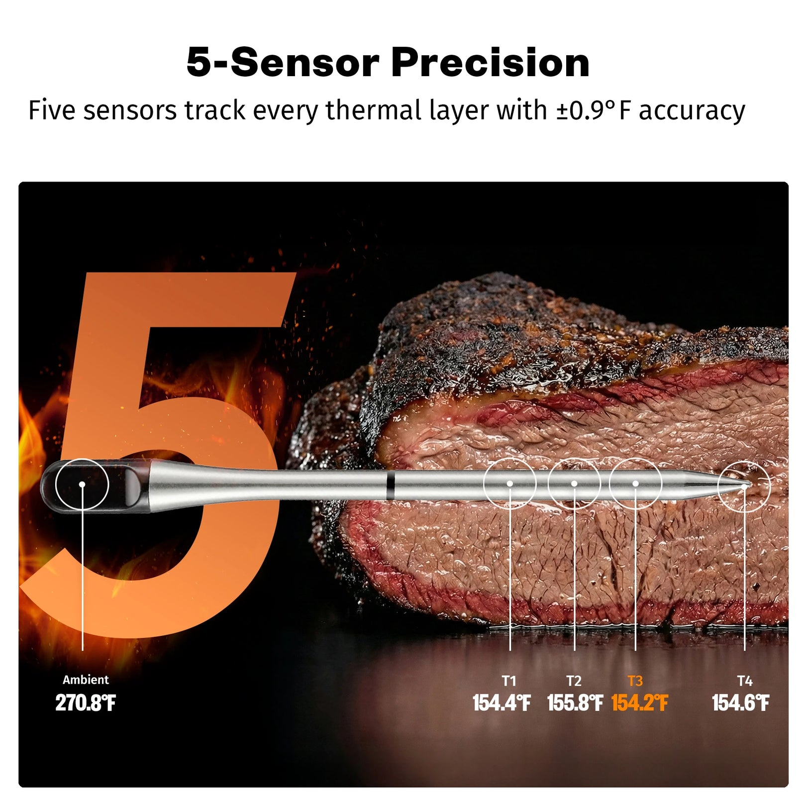
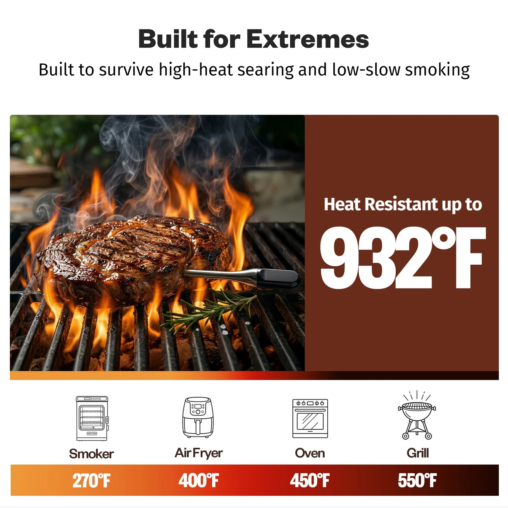
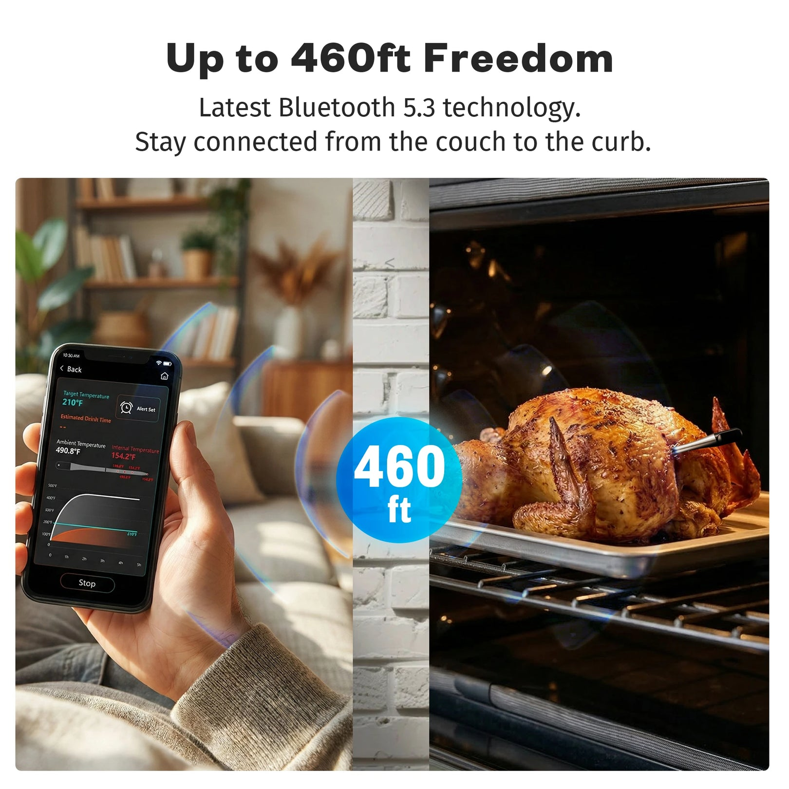
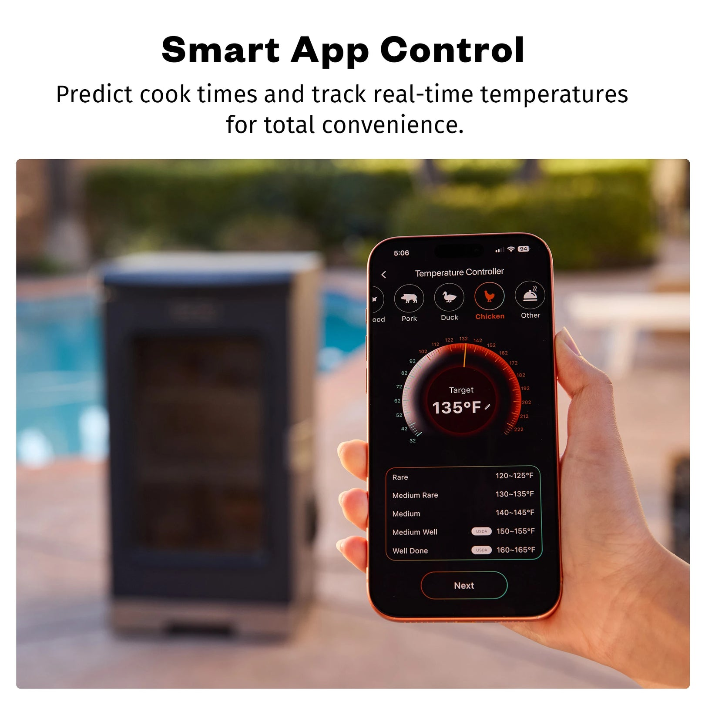
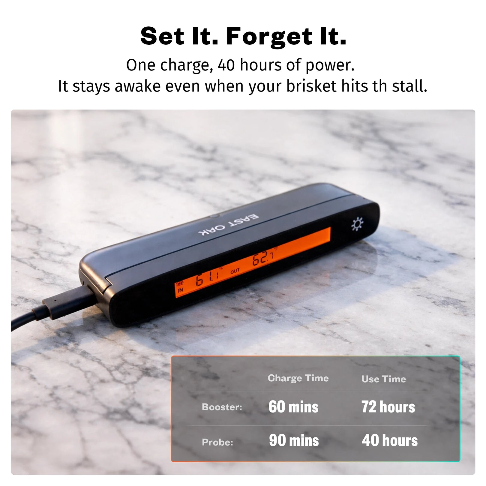

返回全部作品
EAST OAK · SMART HARDWARE
无线肉探针
Amazon 商品页与 A+ 视觉
为 EAST OAK 无线肉探针设计商品页与 A+ 内容，用产品特写、参数说明和使用场景展示功能。
我的职责视觉方向 · 信息结构 · 版式设计
查看已上线商品页
- SCOPE
- PDP · A+ CONTENT
- ROLE
- 视觉方向、信息结构与版式设计。
- OUTPUT
- 10 张 PDP 素材、10 张 A+ 素材。
01 · PDP SYSTEM
每张图讲清一个功能。
五个传感器、耐热表现、蓝牙连接、App 监控、续航与防水清洁分别展开，减少一张图里同时出现的信息。






02 · A+ CONTENT


03 · USAGE STORY
首次使用的四个步骤。
用连续画面展示首次使用：设定目标温度、插入探针、接收提醒，再到静置与享用。